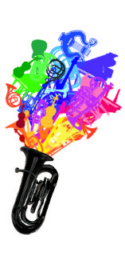

Organisatie
Het solistenconcours wordt georganiseerd door:
Organisatiecommissie:
- Sanne Wouda
- Merlijn Chardon
- David Ernst
- Renée van Kemenade (secretariële ondersteuning)
Contact:
ESMG Quadrivium
t.a.v. Solistenconcours
John F. Kennedylaan 3
5612 AB Eindhoven
040-2478506
solist@studentenmuziek.nl